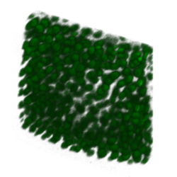
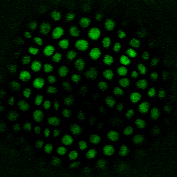

This is a public Beta 5, so please, bear with us if something breaks and don't hesitate to leave your comments, bug reports and suggestions to us!
This application allows you to select an image in the Bisque database (or upload a local file) and automatically identify nuclear centroid locations in 3D/4D fluorescent microscopic imagery. These locations can be exported as text, excel file, XML or visualized overlayed on image. Simple statistics can be obtained from detected nuclei. Furthermore these locations can be used for additional analysis such as classification (PHFDetector module for example).
It is too often that people look at 2D projections of already existing volumentric data and derive conclusions based on those projections that might not be correct, we strive to create tools that give you most correct answers.
We start with a laser scanning confocal 3D stack that has a nuclear stain channel. In volumetric rendering the stack looks like this:

Single plain of the stack looks like this:

Nuclear diameter: approximate average nuclear diameter observed in the image. Usually algorithm will do just fine, tweak this value if you see too few or too many points. Increase the size if you see one nucleus marked with two centroids. Reduce the size if you don't see smaller nuclei being detected.
Membrane channel: you can choose a second channel that does not co-locolize with nuclei, this channel will be used for cleaning nuclear channel and defining the separation between nuclei a bit better.
Other parameters are usually loaded automatically.